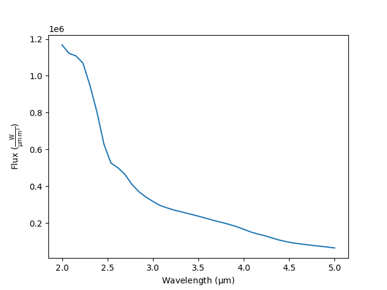

Note
Go to the end to download the full example code.
Use the VSPEC PHOENIX grid#
This example shows how to use the VSPEC grid.
from astropy import units as u
import numpy as np
from jax import numpy as jnp
import matplotlib.pyplot as plt
from GridPolator import GridSpectra
from GridPolator import config
Load the PHOENIX grid#
Load the default VSPEC PHOENIX grid.
wave_short = 1*u.um
wave_long = 10*u.um
resolving_power = 100
teffs = [3000,3100,3200]
spec = GridSpectra.from_vspec(
w1=wave_short,
w2=wave_long,
resolving_power=resolving_power,
teffs=teffs
)
Loading Spectra: 0%| | 0/3 [00:00<?, ?it/s]PHOENIX grid for 3000 not found. Downloading...
Downloading teff=3000: 0%| | 0.00/33.8M [00:00<?, ?B/s]
Downloading teff=3000: 0%| | 4.10k/33.8M [00:00<1:31:00, 6.19kB/s]
Downloading teff=3000: 0%| | 32.8k/33.8M [00:00<11:10, 50.3kB/s]
Downloading teff=3000: 0%| | 98.3k/33.8M [00:00<03:51, 145kB/s]
Downloading teff=3000: 1%| | 197k/33.8M [00:01<02:03, 273kB/s]
Downloading teff=3000: 1%|▏ | 438k/33.8M [00:01<00:54, 617kB/s]
Downloading teff=3000: 3%|▎ | 881k/33.8M [00:01<00:26, 1.22MB/s]
Downloading teff=3000: 5%|▌ | 1.79M/33.8M [00:01<00:12, 2.50MB/s]
Downloading teff=3000: 11%|█ | 3.60M/33.8M [00:01<00:05, 5.34MB/s]
Downloading teff=3000: 13%|█▎ | 4.35M/33.8M [00:01<00:05, 5.53MB/s]
Downloading teff=3000: 23%|██▎ | 7.62M/33.8M [00:02<00:02, 10.2MB/s]
Downloading teff=3000: 33%|███▎ | 11.2M/33.8M [00:02<00:01, 13.9MB/s]
Downloading teff=3000: 45%|████▍ | 15.2M/33.8M [00:02<00:01, 17.0MB/s]
Downloading teff=3000: 56%|█████▌ | 18.9M/33.8M [00:02<00:00, 18.9MB/s]
Downloading teff=3000: 67%|██████▋ | 22.8M/33.8M [00:02<00:00, 20.2MB/s]
Downloading teff=3000: 78%|███████▊ | 26.5M/33.8M [00:02<00:00, 21.0MB/s]
Downloading teff=3000: 89%|████████▉ | 30.0M/33.8M [00:03<00:00, 21.2MB/s]
Downloading teff=3000: 100%|█████████▉| 33.7M/33.8M [00:03<00:00, 21.7MB/s]
Downloading teff=3000: 100%|██████████| 33.8M/33.8M [00:03<00:00, 10.5MB/s]
Loading Spectra: 33%|███▎ | 1/3 [00:04<00:08, 4.30s/it]PHOENIX grid for 3100 not found. Downloading...
Downloading teff=3100: 0%| | 0.00/33.7M [00:00<?, ?B/s]
Downloading teff=3100: 0%| | 4.10k/33.7M [00:00<1:16:44, 7.32kB/s]
Downloading teff=3100: 0%| | 12.3k/33.7M [00:00<27:13, 20.6kB/s]
Downloading teff=3100: 0%| | 36.9k/33.7M [00:00<09:21, 60.0kB/s]
Downloading teff=3100: 0%| | 98.3k/33.7M [00:01<03:36, 155kB/s]
Downloading teff=3100: 1%| | 209k/33.7M [00:01<01:47, 312kB/s]
Downloading teff=3100: 1%|▏ | 430k/33.7M [00:01<00:53, 625kB/s]
Downloading teff=3100: 3%|▎ | 889k/33.7M [00:01<00:25, 1.28MB/s]
Downloading teff=3100: 5%|▌ | 1.80M/33.7M [00:01<00:12, 2.57MB/s]
Downloading teff=3100: 11%|█ | 3.62M/33.7M [00:01<00:05, 5.13MB/s]
Downloading teff=3100: 21%|██▏ | 7.17M/33.7M [00:02<00:02, 10.1MB/s]
Downloading teff=3100: 31%|███ | 10.4M/33.7M [00:02<00:01, 13.0MB/s]
Downloading teff=3100: 39%|███▉ | 13.2M/33.7M [00:02<00:01, 14.3MB/s]
Downloading teff=3100: 49%|████▉ | 16.6M/33.7M [00:02<00:01, 16.2MB/s]
Downloading teff=3100: 59%|█████▊ | 19.7M/33.7M [00:02<00:00, 17.1MB/s]
Downloading teff=3100: 68%|██████▊ | 22.8M/33.7M [00:02<00:00, 17.5MB/s]
Downloading teff=3100: 78%|███████▊ | 26.2M/33.7M [00:02<00:00, 18.5MB/s]
Downloading teff=3100: 88%|████████▊ | 29.7M/33.7M [00:03<00:00, 19.4MB/s]
Downloading teff=3100: 99%|█████████▉| 33.4M/33.7M [00:03<00:00, 20.3MB/s]
Downloading teff=3100: 100%|██████████| 33.7M/33.7M [00:03<00:00, 10.1MB/s]
Loading Spectra: 67%|██████▋ | 2/3 [00:08<00:04, 4.22s/it]PHOENIX grid for 3200 not found. Downloading...
Downloading teff=3200: 0%| | 0.00/33.6M [00:00<?, ?B/s]
Downloading teff=3200: 0%| | 4.10k/33.6M [00:00<1:36:16, 5.82kB/s]
Downloading teff=3200: 0%| | 32.8k/33.6M [00:00<11:59, 46.7kB/s]
Downloading teff=3200: 0%| | 98.3k/33.6M [00:01<04:03, 138kB/s]
Downloading teff=3200: 1%| | 209k/33.6M [00:01<01:54, 291kB/s]
Downloading teff=3200: 1%|▏ | 438k/33.6M [00:01<00:54, 605kB/s]
Downloading teff=3200: 3%|▎ | 897k/33.6M [00:01<00:26, 1.24MB/s]
Downloading teff=3200: 5%|▌ | 1.79M/33.6M [00:01<00:12, 2.47MB/s]
Downloading teff=3200: 11%|█ | 3.63M/33.6M [00:01<00:05, 5.04MB/s]
Downloading teff=3200: 22%|██▏ | 7.27M/33.6M [00:02<00:02, 10.1MB/s]
Downloading teff=3200: 31%|███ | 10.5M/33.6M [00:02<00:01, 12.4MB/s]
Downloading teff=3200: 42%|████▏ | 14.0M/33.6M [00:02<00:01, 15.0MB/s]
Downloading teff=3200: 52%|█████▏ | 17.3M/33.6M [00:02<00:00, 16.6MB/s]
Downloading teff=3200: 62%|██████▏ | 20.7M/33.6M [00:02<00:00, 17.8MB/s]
Downloading teff=3200: 73%|███████▎ | 24.4M/33.6M [00:02<00:00, 19.2MB/s]
Downloading teff=3200: 85%|████████▍ | 28.5M/33.6M [00:03<00:00, 20.0MB/s]
Downloading teff=3200: 97%|█████████▋| 32.6M/33.6M [00:03<00:00, 21.2MB/s]
Downloading teff=3200: 100%|██████████| 33.6M/33.6M [00:03<00:00, 10.4MB/s]
Loading Spectra: 100%|██████████| 3/3 [00:12<00:00, 4.15s/it]
Loading Spectra: 100%|██████████| 3/3 [00:12<00:00, 4.18s/it]
Recall a spectrum from the grid#
GridSpectra will resample the grid with your supplied
wavelength array as well as interpolate between \(T_{eff}\) values.
new_wl:u.Quantity = np.linspace(2,5,40) * u.um
teff = 3050 * u.K
new_wl = jnp.array(new_wl.to_value(config.wl_unit))
teff = jnp.array([teff.to_value(config.teff_unit)])
flux = spec.evaluate((teff,), new_wl)[0]
plt.plot(new_wl, flux)
plt.xlabel(f'Wavelength ({config.wl_unit:latex})')
_=plt.ylabel(f'Flux ({config.flux_unit:latex})')

Total running time of the script: (0 minutes 12.760 seconds)